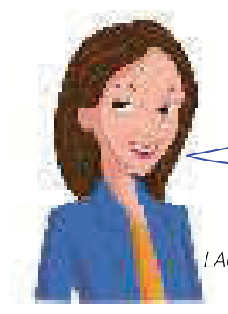

Learning Objectives
- Use the past simple to talk about the past: lived, started, wrote, was, died
- Form the past simple of regular verbs with -ed
- Recognise and use common irregular past forms: wrote, saw, went, shut
- Make questions and negative sentences with did / didn't + infinitive
- Use do as the main verb: What did you do? / I didn't do anything.
- Use was / were as the past of be
Part A — Theory
Study this example

Wolfgang Amadeus Mozart was an Austrian musician and composer. He lived from 1756 to 1791. He started composing at the age of five and wrote more than 600 pieces of music. He was only 35 years old when he died.
lived/started/wrote/was/died are all past simple.
Very often the past simple ends in -ed (regular verbs)
I work in a travel agency now. Before that I worked in a department store.
They invited us to their party, but we decided not to go.
The police stopped me on my way home last night.
Laura passed her exam because she studied very hard.
For spelling (stopped, studied etc.), see Appendix 6.
But many verbs are irregular
The past simple does not end in -ed. For example:
| Infinitive | Past simple | Example |
|---|---|---|
write | wrote | Mozart wrote more than 600 pieces of music. |
see | saw | We saw Alice in town a few days ago. |
go | went | I went to the cinema three times last week. |
shut | shut | It was cold, so I shut the window. |
For a list of irregular verbs, see Appendix 1.
In questions and negative sentences we use did / didn't + infinitive
In questions and negative sentences we use did/didn't + infinitive (enjoy/see/go etc.):
| Subject | Verb | |
|---|---|---|
| (positive) | I / she / they | enjoyed / saw / went |
did | you / she / they | enjoy? / see? / go? |
didn't | I / she / they | enjoy / see / go |
Examples
I enjoyed the party a lot. Did you enjoy it?
How many people did they invite to the wedding?
I didn't buy anything because I didn't have any money.
'Did you go out?' 'No, I didn't.'
Sometimes do is the main verb in the sentence
Sometimes do is the main verb in the sentence (did you do?, I didn't do):
What did you do at the weekend? (not What did you at the weekend?)
I didn't do anything. (not I didn't anything)
The past of be (am/is/are) is was / were
| Subject | Positive | Negative | Question |
|---|---|---|---|
| I / he / she / it | was | wasn't | was I/he/she/it? |
| we / you / they | were | weren't | were we/you/they? |
I was annoyed because they were late.
Was the weather good when you were on holiday?
They weren't able to come because they were so busy.
I wasn't hungry, so I didn't eat anything.
Did you go out last night or were you too tired?
Past simple and past continuous ➜ Unit 6
Past simple and present perfect ➜ Units 12–14
Part B — Exercises
Read what Laura says about a typical working day:
Yesterday was a typical working day for Laura. Write what she did or didn't do yesterday.

I usually get up at 7 o'clock and have a big breakfast. I walk to work, which takes me about half an hour. I start work at 8.45. I never have lunch. I finish work at 5 o'clock. I'm always tired when I get home. I usually cook a meal in the evening. I don't usually go out. I go to bed at about 11 o'clock, and I always sleep well.
- She at 7 o'clock.
- She a big breakfast.
- She .
- It to get to work.
- at 8.45.
- lunch.
- at 5 o'clock.
- tired when home.
- a meal yesterday evening.
- out yesterday evening.
- at 11 o'clock.
- well last night.
Complete the sentences using the following verbs in the correct form:
- Mozart more than 600 pieces of music.
- 'How did you learn to drive?' 'My father me.'
- We couldn't afford to keep our car, so we it.
- Dave down the stairs this morning and his leg.
- Joe the ball to Sue, who it.
- Kate a lot of money yesterday. She a dress which £100.
You ask James about his holiday in the US. Write your questions.
- YOU: Where ? JAMES: To the US. We went on a trip from San Francisco to Denver.
- YOU: How ? By car? JAMES: Yes, we hired a car in San Francisco.
- YOU: It's a long way to drive. How long ? JAMES: Two weeks. We stopped at a lot of places along the way.
- YOU: Where ? In hotels? JAMES: Yes, small hotels or motels.
- YOU: good? JAMES: Yes, but it was very hot – sometimes too hot.
- YOU: the Grand Canyon? JAMES: Of course. It was wonderful.
Complete the sentences. Put the verb into the correct form, positive or negative.
- It was warm, so I off my coat. (take)
- The film wasn't very good. I it much. (enjoy)
- I knew Sarah was busy, so I her.
- We were very tired, so we the party early.
- It was hard carrying the bags. They really heavy.
- The bed was very uncomfortable. I well.
- This watch wasn't expensive. It much.
- The window was open and a bird into the room.
- I was in a hurry, so I time to call you.
- I didn't like the hotel. The room very clean.
Answer Key
Exercise 5.1 — What Laura did yesterday
- She got up at 7 o'clock.
- She had a big breakfast.
- She walked to work.
- It took her (about) half an hour to get to work.
- She started work at 8.45.
- She didn't have / She did not have (any) lunch. / She didn't eat / She did not eat (any) lunch.
- She finished work at 5 o'clock.
- She was tired when she got home.
- She cooked / She made a meal yesterday evening.
- She didn't go / She did not go out yesterday evening.
- She went to bed at 11 o'clock.
- She slept well last night.
Exercise 5.2 — Verbs in the correct form
- Mozart wrote more than 600 pieces of music.
- 'How did you learn to drive?' 'My father taught me.'
- We couldn't afford to keep our car, so we sold it.
- Dave fell down the stairs this morning and hurt his leg.
- Joe threw the ball to Sue, who caught it.
- Kate spent a lot of money yesterday. She bought a dress which cost £100.
Exercise 5.3 — Questions about James's holiday
- Where did you go?
- How did you travel / did you go? By car?
- It's a long way to drive. How long did it take (you) / was your trip / were you there?
- Where did you stay? In hotels?
- Was the weather good?
- Did you go to / Did you see / Did you visit the Grand Canyon?
Exercise 5.4 — Positive or negative
- It was warm, so I took off my coat.
- The film wasn't very good. I didn't enjoy / did not enjoy it much.
- I knew Sarah was busy, so I didn't disturb / did not disturb her.
- We were very tired, so we left the party early.
- It was hard carrying the bags. They were really heavy.
- The bed was very uncomfortable. I didn't sleep / did not sleep well.
- This watch wasn't expensive. It didn't cost / did not cost much.
- The window was open and a bird flew into the room.
- I was in a hurry, so I didn't have / did not have time to call you.
- I didn't like the hotel. The room wasn't / was not very clean.
Summary
| Use | Example |
|---|---|
| Regular verbs: the past simple ends in -ed | Before that I worked in a department store. Laura passed her exam. |
| Irregular verbs do not end in -ed | Mozart wrote more than 600 pieces of music. We saw Alice in town a few days ago. |
| Questions with did + infinitive | Did you enjoy the party? How many people did they invite to the wedding? |
| Negatives with didn't + infinitive | I didn't buy anything because I didn't have any money. |
| do as the main verb | What did you do at the weekend? I didn't do anything. |
| The past of be is was / were | I was annoyed because they were late. Was the weather good? |